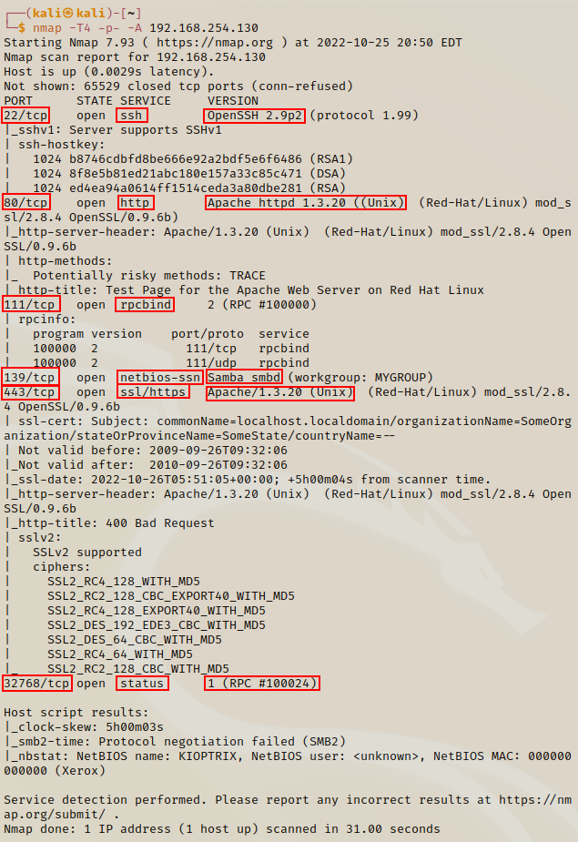

Enumerating HTTP / HTTPS
Continuing from the previous session, we will break downthe results of the nmap and see what information maybe value to us.

nmap results
- ports like 80, 443, 139 are ports we would like to use for exploits (http, https & smb).
- ports like 22 are pretty strongly secured you can use brute force to gain entry but it will take a lot tof time & computational effort.
Before we begin the enumeration, we want to create a folder of the project so we can build notes to use for our exploits and our report. We want to make a report to get used to showing all the vulnerablilities so we get used to doing it for our clients in the real world.
Burp Suite
Now we will use Burp Suite to check if the website exists. We have the IP address of the Kioptrix machine so we can enter it in the into the app to see what type of response we get.
Please follow these steps when the Burp dashboard is open.

Select the Proxy tab then make sure the Intercept is on is switched off. By default it is switched off so turn it off.
Then click on the Open browser tab. A new Burp Suite webpage window will appear. This is where you can test your IP addresses / websites to draw more information from.
Once the browser is open we can enter Kioptrix's IP address to see what we get. These are the things we want to observe and think about:- Running on Apache
- Its running RedHat Linux
- If a client is is running a default webpage, are there any other directories like this?
- Are they hosting a website somewhere else just not at our IP address?
- Have they just got port 80 & 443 open for no reason? etc
We can browse the webpage, click on the links to see what we get.
Target webpage

When we click on the documentation link we are taken to an unresponsive page. This is still valuable to use becasue it tells us the version Apache is running. This is another example of informaiton disclosure - where internal information is made public. The information by itself is not damaging but when put together along with other bits of information we find makes it easier for us to find an exploit.
Nikto
Nikto is a built in web vulnerablility scanner. This allows you to do vulnerablility scanning against a website; but if the website has a good firewall or security then your search will be blocked.
nikto -h http://192.168.254.130

-h refers to host
This is a really good tool because you can get a list of all the different vulnerablilties and well as information about the site that you didn't know.- We can see the Apache version number - and that it is outdated
- We know the language is PHP
- Possible code execution
- vulnerable to a buffer overflow and rewrite
- vulnerable to remote overflow and access to remote shell.
The scanner also applies a word-list to the site. It tries to find if there are any directories by throwing random words at it. Any matching results are then returned - this is called directory busting.

nikto finds directories associated with the website

Copy this into our notes
You would save the results in.to a file within the kioptrix directory. We should also take some useful information and copy it into our notes.
cd kioptrix
gedit nikto.txt
Then paste your scanning report and save
Directory Busting - dirbuster
Kali has a few built in directory busting tools: dirbuster, dirb & gobuster.
To run the tool we enter dirbuster& in the terminal, then you will find a user interface will appear.

Remember to placce the port :80 at the end and you can check the Go Faster to speed up searches
Click browse and navigate to the word-list files in the dirbuster directory.
usr > share > wordlists > dirbuster > directory-list-2.3-small.txt
The different files to choose from are for different levels of search you want to make. We can add as many different file extensions as we want but for this exercise we will just stick with PHP. We could add extra file extensions like: php,txt,zip,pdf,rar, etc. Please note the mor file extensions we use will make the search take longer - because for every directory it finds it will search for every file extension provided. It is best to just stick to the file extensions you need or searching for.
When you start the search you will be able to see results on your terminal as well as the GUI.

As the directories are found they appear here
In the GUI yo uhave options to browse through the files by clicking on Results - Tree View.

We can look at the source code of the website to see if there might be some hidden creditenials that you may unexpectedly may find. This is more looking for mistakes made by your target. For exercises from Vulnhub you can check the source code for more information on the exercise.
Using Burp Suite we will got to the Kioptrix webpage, then navigate to the burp suite and click Intercept is on. Refresh the Kioptrix webpage and you should get response like below.

We can then send this to the Repeater by clicking Ctrl+R or right click and press Send to Repeater.
This will allow you to review the response in real-time and it allows you to modify your requests (like sending a POST request instead of a GET request). This is good for prodding websites for information by testing their responses when we modify the requests.
We can also set the scope, in our case we don't need to but you may find yourseflf in a situation where you need to focus your searches. You can set the scope to forcus on a particular seacrh area.

Select Scope

Select Add and enter IP address of the scope
Still inside the Target tab, if we look at the response of the homepage we can see information on the server. It tells us the Apache version (just like with nmap and nikto).

We would make a note of this in our notes as this is another example of information disclosure; we would also want to take a photo of the resposne - as part of our report we would make to our client. We want to take show the client all the vulnerablilities even if we didn't use all of them to run our exploit.
If we check the dirbuster app we can scroll through the directoreis; we will look at the usage directory and open one of the pages to view the content.

Select a file to view the page - make sure the intercept is swictehd off in burp

usage_202210.html
When we scroll through the page it looks like theres a lot of information of statistics and graphs, but it is not of any use to use. At the bottom of the page we can see the page was craeted by Webalizer and the version number.

Now what we would do is search through each of the files within the directories in burp - this is to gather more information; note not every piece of data is going to be useful to you so you will have to make that desecion.
What to look out for when information gathering:- Service version info
- Any sort of backend directories
- Source code
- Check for vulnerablities with nikto
- Any other information you may find useful.